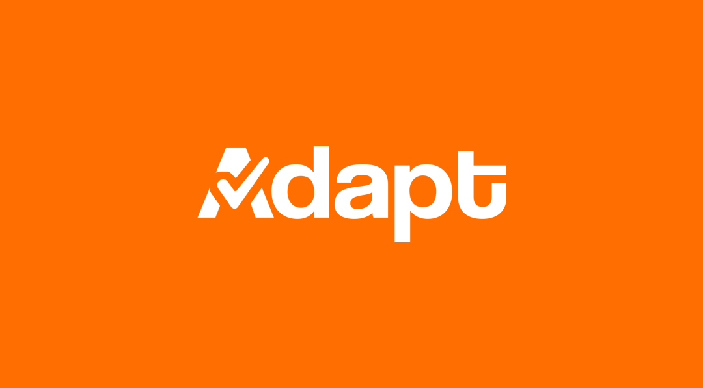

Projetos
Uma seleção de projetos acadêmicos, pessoais e de design
que refletem minha trajetória em tecnologia, pesquisa e comunicação visual.
Acadêmicos

ADAPT - Sistema de Adaptação de Provas para neurodivergentes
Projeto acadêmico interdisciplinar voltado ao desenvolvimento de uma solução tecnológica para que professores de nível superior apoiem estudantes neurodivergentes (com foco em TDAH) a adaptarem suas provas e acompanharem seu desempenho, integrando conceitos de Engenharia de Software, e acompanhamento de desempenho, integrando conceitos de Engenharia de Software, UX e gestão de projetos.
Atuei na concepção do sistema, definição da proposta do produto, organização do planejamento do projeto e desenvolvimento do front-end, além da participação ativa nas decisões de UX e estruturação da solução como líder da equipe de front-end.
Tecnologias Utilizadas: Planejamento de Projetos, UX Design, prototipação de interfaces, desenvolvimento web, Figma, HTML/CSS e metodologias de gestão de projetos.
Tecnologias utilizadas: Python, NumPy, Matplotlib.
Contexto: Trabalho desenvolvido na disciplina de IA no 3º período.
Resultado: Artigo submetido para o evento X.

Nome do Projeto
Descrição breve do projeto acadêmico.
Tecnologias utilizadas: C++, algoritmos genéticos.
Contexto: Projeto de extensão universitária.
Resultado: Apresentado no seminário interno da UNICAP.
Pessoais & Voluntários

Nome do Projeto
Descrição breve do projeto pessoal ou voluntário.
Motivação: Aprendizado prático com desenvolvimento web.
Tecnologias: HTML, CSS, JavaScript.
Status: Em andamento.

Nome do Projeto
Descrição breve do projeto pessoal ou voluntário.
Impacto: Apoio a comunidades locais através de tecnologia.
Equipe: Projeto voluntário com 4 pessoas.
Status: Concluído em 2024.
Design Gráfico

Nome do Projeto
Identidade visual, materiais gráficos ou exploração de layout.
Ferramentas: Adobe Illustrator, Photoshop.
Cliente/Contexto: Projeto pessoal de branding.
Entregáveis: Logotipo, paleta de cores, tipografia.

Nome do Projeto
Projeto de design integrando estética e storytelling visual.
Ferramentas: Figma, Photoshop.
Contexto: Layout para evento universitário.
Entregáveis: Cartazes, posts para redes sociais.
Gostou do que viu?
Entre em contato para conversar sobre colaborações, pesquisa ou novas ideias.